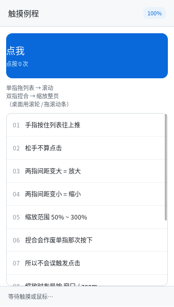

触摸：单指点按 · 拖动滚动 · 双指缩放

完整程序：example/37_touch/
手机上只有触摸：没有滚轮、没有 hover、没有"精确到像素"的指针。这一章讲清楚 触摸是怎么从协议走到界面的，以及三件必须做对的事。
/* 后端只管上报：哪根手指、在哪儿、手上还有几根 */
ql_input_push_touch(x, y, QL_TOUCH_DOWN, /*id=*/0, /*count=*/1);
/* 界面层认手势，接一个回调就能收到捏合 */
ql_ui_set_pinch_cb(ui, on_pinch, NULL);
/* 捏合 → 整页缩放：布局按 窗口/zoom，绘制由后端放大 */
ql_gfx_gl_set_zoom(gfx, zoom_fx);
ql_ui_layout(ui, win_w * QL_SCALE_ONE / zoom_fx, win_h * QL_SCALE_ONE / zoom_fx);
1. 分工：后端不上报鼠标，手势在界面层认
Wayland 的 wl_touch 给的是"每根手指一串 down/move/up"。最省事的做法是每根手指
都合成鼠标事件 —— 但那样双指就是两次乱点，而且"这一下算点按还是算拖动"
根本没法判断（要看按在谁身上）。
所以分工是：
| 层 | 只做 | 不做 |
|---|---|---|
后端（qlwindow_wayland.h） |
把 wl_touch 翻成 QL_INPUT_TOUCH，数清"手上还有几根" |
不合成指针事件、不认手势 |
输入队列（qlinput.c） |
排队、派发 | 不知道界面长什么样（老规矩） |
界面层（qlui.c） |
单指=鼠标、拖动=滚列表、双指=捏合 | 不碰协议 |
这正是本库一贯的分法（见 QLUI 阅读指南 的"命中测试在界面层"），好处是触摸逻辑
可以在没有触摸屏的机器上测：test_touch 就是直接喂合成事件的。
2. 单指：先当鼠标，超过 8px 就改主意
QL_CFG_UI_TOUCH_SLOP /* 8px：手指抖 2~3px 很常见，不设阈值会把点按都认成拖动 */
- 按下 →
ql_ui_pointer_down()（:active样式、输入框定位、按钮按下效果全都免费得到）； - 移动但没超过 8px → 只更新位置（不算拖动）；
- 一旦超过 8px → 记下"按在哪个可滚动容器上"，之后每次移动都按 "按下点 + 累计位移" 算目标滚动位置（而不是每帧加增量 —— 中途被夹到头也不会积累误差）；
- 抬起：拖过就不合成
click，没拖过才合成。
用累计位移而不是增量，是"手指按住不放慢慢挪"能稳定停住的原因；增量式实现在 滚到边界再往回拖时会少走一截。
3. 双指：先把刚才那次按下作废
第二根手指落下时，第一根手指的"按下"已经发生过了（按钮可能已经变色）。这时必须：
press_abort()：清掉:active/ 拖动选字 / 滚动条拖动状态；- 不合成
click； - 记下两指间距作为基准，回调
QL_UI_PINCH_BEGIN； - 之后每次移动回调
QL_UI_PINCH_UPDATE，倍数 = 当前间距 / 基准间距。
手势结束时（抬起一根）回调 QL_UI_PINCH_END，并且剩下的那根手指不再当鼠标 ——
否则"两指缩放完，先松开一根、另一根还按着"，最后那一下抬手会在落点误触发一次点击。
倍数用"相对基准"而不是"相对上一帧"：手指抖动时增量会累积漂移，一两秒下来画面就歪了。
4. 缩放整页：布局基准变小，绘制变大
库只给"倍数"，缩放什么由应用决定（可能只想缩放一张图）。例程缩放整页，做两件事：
ql_gfx_gl_set_zoom(gfx, zoom); /* 绘制时 CSS px 乘 zoom */
ql_ui_layout(ui, win_w * QL_SCALE_ONE / zoom, /* 布局基准 = 窗口 / zoom */
win_h * QL_SCALE_ONE / zoom);
为什么不是"改字号"或"改宽度"：那两样都要重新解析 CSS、重新算 em/rem，而且
文字会重排（行数变、换行位置变）。按 DPR 的方式放大是纯几何的：布局在
窗口/zoom 的空间里照旧，绘制时整体乘一个系数，字形还按新尺寸重新取字体
（所以放大后是清晰的，不是位图拉伸）。
| 概念 | 决定什么 | 谁改 |
|---|---|---|
scale_fx（DPR） |
帧缓冲多大（设备像素 = CSS × DPR） | 后端（wl_output.scale） |
zoom_fx（应用缩放） |
同样的缓冲里内容画多大 | 应用（捏合/Ctrl+滚轮） |
输入坐标不用应用操心：X11 后端按 设备像素 / (DPR×zoom) 换算，Wayland 外壳按
逻辑坐标 / zoom 换算 —— 界面层拿到的永远是它自己那套 CSS 坐标。
./build/example/example_37_touch # 触摸屏：直接上手
./build/example/example_37_touch --zoom 150 # 没触摸屏时验证缩放路径
5. 顺手修掉的一个真 bug：flex 里的滚动容器滚不动
写这个例程时发现的：手机布局几乎都是
.body { display: flex; flex-direction: column; }
.list { flex: 1 1 0; overflow-y: auto; } /* 中间那块列表 */
结果列表怎么滚都回到顶部。原因是 flex 要先测量每一项的主轴尺寸，
测量那几轮会真的跑一遍布局 —— 那时容器高度还是临时值（实测列表一轮 540、
一轮 538、最后才 336），而 apply_scroll() 会把滚动偏移夹进"本轮算出来的
可滚范围"里：540 高的那轮范围是 0，用户的滚动位置就被夹成 0 了。
修法是给测量加个开关（layout_measure() → s_measuring），测量期间
apply_scroll() 直接返回，不动运行期状态。回归测试在 test_scroll 第 11 节：
ql_ui_scroll_by(ui, sc, 0, 60); /* 滚到 60 */
ql_ui_layout(ui, W, H); /* 再排一次（每帧都会做的事） */
CHECK(sc->scroll_y == 60); /* 位置必须还在 */
6. 已知不做
- 多指手势的识别（三指滑动、旋转）：五根手指的状态都上报了，但库只认单指拖动
和双指捏合这两件。旋转要
atan2和角度归一化，本机也没法好好验证； - 惯性滚动（fling）：松手后继续滑一段。要速度采样 + 衰减动画，属于"手感"而不是 "能不能用"，先不做；
- 长按 / 双击：
QLInputEvent.time_ms字段留着，但没接； - 原生 Wayland 的软键盘：要
zwp_text_input_v3/zwp_input_method_v2， 见开发规划M6.5 第 4 步（触摸有了、弹不出键盘的手机还是不完整）。